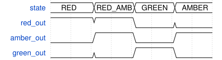

p_outputs
Source file:
traffic_light.vhdSource line: 147
Block type:
processSensitivity list:
stateDescription
p_outputs: Combinational Moore output decode. Drives lamp outputs based solely on current state. All outputs default to 0 before the case statement to prevent latches during synthesis. Output truth table: .. code-block:: none
RED -> red=1 amber=0 green=0 RED_AMBER -> red=1 amber=1 green=0 GREEN -> red=0 amber=0 green=1 AMBER -> red=0 amber=1 green=0

Source
begin
red_out <= '0';
amber_out <= '0';
green_out <= '0';
case state is
-- define red
when RED => red_out <= '1';
when RED_AMBER => red_out <= '1'; amber_out <= '1';
when GREEN => green_out <= '1';
when AMBER => amber_out <= '1';
end case;
end process p_outputs;